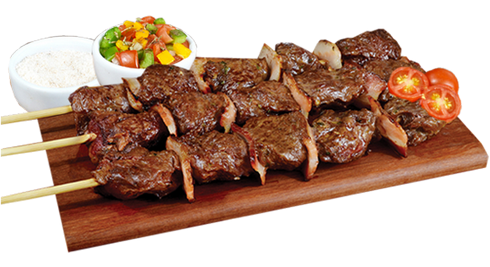

Cultura:
- A região Sul do Brasil é formada pelos estados do Paraná, Rio Grande do Sul e Santa Catarina, que receberam influências de vários países, como os imigrantes alemães, portugueses e italianos, até mesmo poloneses e ucranianos.
- Um de vários costumes do sul é tomar chimarrão, que é preparado em uma cuia com erva mate, depois colocamos água quente.
- Outra coisa muito presente no Sul é o churrasco, que pode ser feito em uma churrasqueira ou com fogo no chão, sendo uma especialidade do Rio Grande do Sul. No sul a carne é assada em espetos, mas em outras regiões do brasil são feitas na grelha ao invés do espeto.
- Uma festa tradicional no Sul é a Oktoberfest, onde possui tradições germânicas. No festival há shows, cervejas, desfiles, danças típicas entre outras coisas, ocorrendo normalmente em outubro.
- Também existe a festa de Nossa Senhora dos Navegantes é uma tradição que os portugueses trouxeram, na qual a imagem da Nossa Senhoras dos Navegantes é levada para o santuário.
- A última festa que citaremos é a Festa da Uva, ocorre em fevereiro, mostrando a colonização italiana através de desfiles, espetáculos regionais, também uma exposição de uvas e vinhos.
Algumas músicas da Região Sul:
- Querência amada (Teixeirinha);
- Céu, Sol, Sul, Terra e Cor (Leonardo);
- Eu sou do Sul (Elton Saldanha)
Comidas Tipicas:
- Carreteiro (foi criado originalmente com carne seca e arroz);
- Vovó sentada;
- Costela assada;
- Matambre recheado: carne retirada da costela bovina, recheada, assada em fogo lento, ou no bafo, e servida junto a especiarias, como chimichurri ou vinagrete;
- X-Gaúcho: é um pão prensado, o recheio pode ter 3 variações: picanha assada, hambúrguer e carne desfiada, ou carne de panela.

Integrantes: Pedro Antônio, Raul, Pietro e Mariano